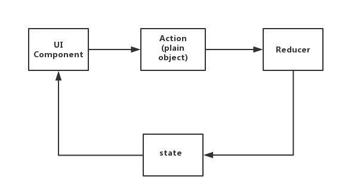
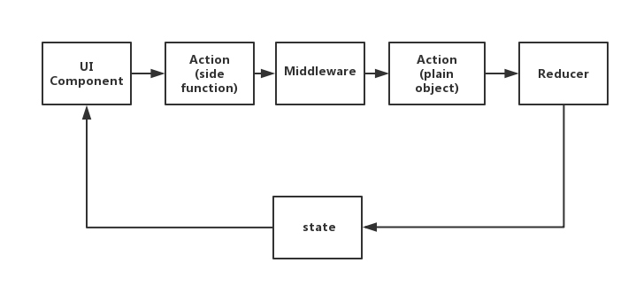
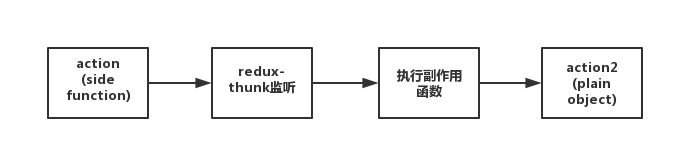
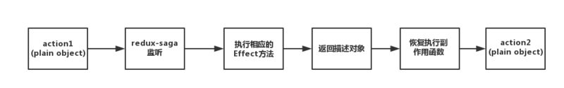
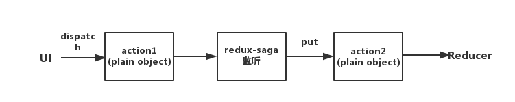
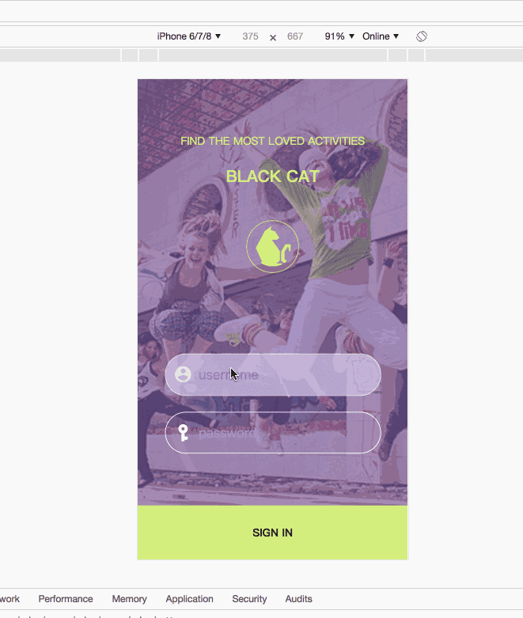
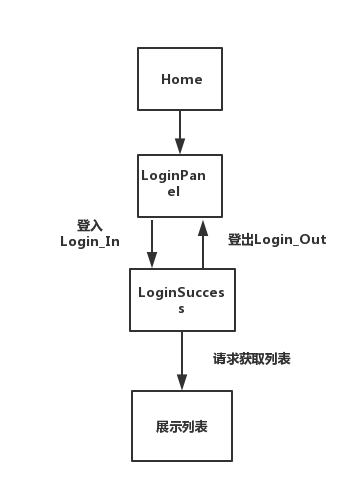
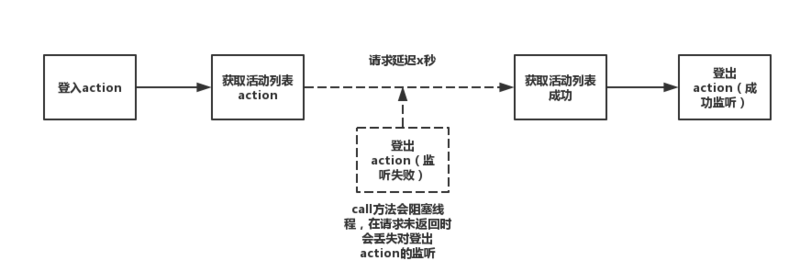

# 一、redux-thunk
# 1.1 redux的副作用处理
redux中的数据流大致是
UI—————>action（plain）—————>reducer——————>state——————>UI

redux是遵循函数式编程的规则，上述的数据流中，action是一个原始js对象（plain object）且reducer是一个纯函数，对于同步且没有副作用的操作，上述的数据流起到可以管理数据，从而控制视图层更新的目的- 如果存在副作用函数，那么我们需要首先处理副作用函数，然后生成原始的js对象。如何处理副作用操作，在
redux中选择在发出action，到reducer处理函数之间使用中间件处理副作用
redux增加中间件处理副作用后的数据流大致如下：
UI——>action(side function)—>middleware—>action(plain)—>reducer—>state—>UI

在有副作用的
action和原始的action之间增加中间件处理，从图中我们也可以看出，中间件的作用就是：
- 转换异步操作，生成原始的action，这样，
reducer函数就能处理相应的action，从而改变state，更新UI
# 1.2 redux-thunk源码
在redux中，thunk是redux作者给出的中间件，实现极为简单，10多行代码
function createThunkMiddleware(extraArgument) {
return ({ dispatch, getState }) => next => action => {
if (typeof action === 'function') {
return action(dispatch, getState, extraArgument);
}
return next(action);
};
}
const thunk = createThunkMiddleware();
thunk.withExtraArgument = createThunkMiddleware;
export default thunk;
这几行代码做的事情也很简单，判别action的类型，如果action是函数，就调用这个函数，调用的步骤为
action(dispatch, getState, extraArgument);
发现实参为
dispatch和getState，因此我们在定义action为thunk函数是，一般形参为dispatch和getState
# 1.3 redux-thunk的缺点
thunk`的缺点也是很明显的，`thunk`仅仅做了执行这个函数，并不在乎函数主体内是什么，也就是说`thunk`使得`redux`可以接受函数作为`action`，但是函数的内部可以多种多样。比如下面是一个获取商品列表的异步操作所对应的`action
export default ()=>(dispatch)=>{
fetch('/api/goodList',{ //fecth返回的是一个promise
method: 'get',
dataType: 'json',
}).then(function(json){
var json=JSON.parse(json);
if(json.msg==200){
dispatch({type:'init',data:json.data});
}
},function(error){
console.log(error);
});
};
从这个具有副作用的
action中，我们可以看出，函数内部极为复杂。如果需要为每一个异步操作都如此定义一个action，显然action不易维护
action不易维护的原因
action的形式不统一- 就是异步操作太为分散，分散在了各个
action中
# 二、redux-saga 简介
redux-saga是一个redux中间件，它具有如下特性
- 集中处理
redux副作用问题。 - 被实现为
generator。 - 类
redux-thunk中间件。 watch/worker（监听->执行） 的工作形式
redux-saga的优点
- 集中处理了所有的异步操作，异步接口部分一目了然
action是普通对象，这跟redux同步的action一模一样- 通过
Effect，方便异步接口的测试 - 通过
worker和watcher可以实现非阻塞异步调用，并且同时可以实现非阻塞调用下的事件监听 - 异步操作的流程是可以控制的，可以随时取消相应的异步操作
基本用法
- 使用
createSagaMiddleware方法创建saga的Middleware，然后在创建的redux的store时，使用applyMiddleware函数将创建的saga Middleware实例绑定到store上，最后可以调用saga Middleware的run函数来执行某个或者某些Middleware。 - 在
saga的Middleware中，可以使用takeEvery或者takeLatest等API来监听某个action，当某个action触发后，saga可以使用call发起异步操作，操作完成后使用put函数触发action，同步更新state，从而完成整个State的更新。
# 三、redux-saga使用案例
redux-saga是控制执行的generator，在redux-saga中action是原始的js对象，把所有的异步副作用操作放在了saga函数里面。这样既统一了action的形式，又使得异步操作集中可以被集中处理redux-saga是通过genetator实现的，如果不支持generator需要通过插件babel-polyfill转义。我们接着来实现一个输出hellosaga的例子
创建一个helloSaga.js文件
export function * helloSaga() {
console.log('Hello Sagas!');
}
在redux中使用redux-saga中间件
在
main.js中
import { createStore, applyMiddleware } from 'redux'
import createSagaMiddleware from 'redux-saga'
import { helloSaga } from './sagas'
const sagaMiddleware=createSagaMiddleware();
const store = createStore(
reducer,
applyMiddleware(sagaMiddleware)
);
sagaMiddleware.run(helloSaga);
//会输出Hello, Sagas!
和调用
redux的其他中间件一样，如果想使用redux-saga中间件，那么只要在applyMiddleware中调用一个createSagaMiddleware的实例。唯一不同的是需要调用run方法使得generator可以开始执行
# 四、redux-saga使用细节
# 4.1 声明式的Effect
在
redux-saga中提供了一系列的api，比如take、put、all、select等API，在redux-saga中将这一系列的api都定义为Effect。这些Effect执行后，当函数resolve时返回一个描述对象，然后redux-saga中间件根据这个描述对象恢复执行generator中的函数
redux-thunk的大体过程
action1(side function)`—>`redux-thunk`监听—>执行相应的有副作用的方法—>`action2(plain object)

转化到
action2是一个原始js对象形式的action，然后执行reducer函数就会更新store中的state
redux-saga的大体过程
action1(plain object)——>redux-saga监听—>执行相应的Effect方法——>返回描述对象—>恢复执行异步和副作用函数—>action2(plain object)

对比
redux-thunk我们发现，redux-saga中监听到了原始js对象action，并不会马上执行副作用操作，会先通过Effect方法将其转化成一个描述对象，然后再将描述对象，作为标识，再恢复执行副作用函数
# 4.2 Effect提供的具体方法
下面来介绍几个
Effect中常用的几个方法，从低阶的API，比如take，call(apply)，fork，put，select等，以及高阶API，比如takeEvery和takeLatest等
import {take,call,put,select,fork,takeEvery,takeLatest} from 'redux-saga/effects'
# 4.2.1 take
take这个方法，是用来监听action，返回的是监听到的action对象。比如
const loginAction = {
type:'login'
}
在
UI Component中dispatch一个action
dispatch(loginAction)
在saga中使用：
const action = yield take('login');
可以监听到UI传递到中间件的
Action,上述take方法的返回，就是dipath的原始对象。一旦监听到login动作，返回的action为：
{
type:'login'
}
# 4.2.2 call(apply)
call和apply方法与js中的call和apply相似，我们以call方法为例
call(fn, ...args)
call方法调用fn，参数为args，返回一个描述对象。不过这里call方法传入的函数fn可以是普通函数，也可以是generator。call方法应用很广泛，在redux-saga中使用异步请求等常用call方法来实现
yield call(fetch,'/userInfo',username)
# 4.2.3 put
redux-saga做为中间件，工作流是这样的
UI——>action1————>redux-saga中间件————>action2————>reducer..
从工作流中，我们发现
redux-saga执行完副作用函数后，必须发出action，然后这个action被reducer监听，从而达到更新state的目的。相应的这里的put对应与redux中的dispatch，工作流程图如下

可以看出
redux-saga执行副作用方法转化action时，put这个Effect方法跟redux原始的dispatch相似，都是可以发出action，且发出的action都会被reducer监听到。put的使用方法
yield put({type:'login'})
# 4.2.4 select
put方法与redux中的dispatch相对应，同样的如果我们想在中间件中获取state，那么需要使用select。select方法对应的是redux中的getState，用户获取store中的state，使用方法：
const id = yield select(state => state.id);
# 4.2.5 fork
fork方法相当于web work，fork方法不会阻塞主线程，在非阻塞调用中十分有用
# 4.2.6 takeEvery和takeLatest
takeEvery和takeLatest用于监听相应的动作并执行相应的方法，是构建在take和fork上面的高阶api，比如要监听login动作，好用takeEvery方法可以
takeEvery('login',loginFunc)
takeEvery监听到login的动作，就会执行loginFunc方法，除此之外，takeEvery可以同时监听到多个相同的action。takeLatest方法跟takeEvery是相同方式调用
takeLatest('login',loginFunc)
与
takeLatest不同的是，takeLatest是会监听执行最近的那个被触发的action
# 五、案例分析一
接着我们来实现一个
redux-saga样例，存在一个登陆页，登陆成功后，显示列表页，并且，在列表页，可以点击登出，返回到登陆页。例子的最终展示效果如下

样例的功能流程图为

# 5.1 LoginPanel(登陆页)
输入时时保存用户名和密码
- 用户名输入框和密码框onchange时触发的函数为
changeUsername:(e)=>{
dispatch({type:'CHANGE_USERNAME',value:e.target.value});
},
changePassword:(e)=>{
dispatch({type:'CHANGE_PASSWORD',value:e.target.value});
}
在函数中最后会
dispatch两个action：CHANGE_USERNAME和CHANGE_PASSWORD
- 在
saga.js文件中监听这两个方法并执行副作用函数，最后put发出转化后的action，给reducer函数调用
function * watchUsername(){
while(true){
const action= yield take('CHANGE_USERNAME');
yield put({type:'change_username',
value:action.value});
}
}
function * watchPassword(){
while(true){
const action=yield take('CHANGE_PASSWORD');
yield put({type:'change_password',
value:action.value});
}
}
最后在
reducer中接收到redux-saga的put方法传递过来的action：change_username和change_password，然后更新state
监听登陆事件判断登陆是否成功
在UI中发出的登陆事件为
toLoginIn:(username,password)=>{
dispatch({type:'TO_LOGIN_IN',username,password});
}
登陆事件的
action为：TO_LOGIN_IN.对于登入事件的处理函数为：
while(true){
//监听登入事件
const action1=yield take('TO_LOGIN_IN');
const res=yield call(fetchSmart,'/login',{
method:'POST',
body:JSON.stringify({
username:action1.username,
password:action1.password
})
if(res){
put({type:'to_login_in'});
}
});
在上述的处理函数中，首先监听原始动作提取出传递来的用户名和密码，然后请求是否登陆成功，如果登陆成功有返回值，则执行
put的action:to_login_in
# 5.2 LoginSuccess
(登陆成功列表展示页)
- 登陆成功后的页面功能包括：
- 获取列表信息，展示列表信息
- 登出功能，点击可以返回登陆页面
获取列表信息
import {delay} from 'redux-saga';
function * getList(){
try {
yield delay(3000);
const res = yield call(fetchSmart,'/list',{
method:'POST',
body:JSON.stringify({})
});
yield put({type:'update_list',list:res.data.activityList});
} catch(error) {
yield put({type:'update_list_error', error});
}
}
为了演示请求过程，我们在本地
mock，通过redux-saga的工具函数delay，delay的功能相当于延迟xx秒，因为真实的请求存在延迟，因此可以用delay在本地模拟真实场景下的请求延迟
登出功能
const action2=yield take('TO_LOGIN_OUT');
yield put({type:'to_login_out'});
与登入相似，登出的功能从UI处接受
action:TO_LOGIN_OUT,然后转发action:to_login_out
完整的实现登入登出和列表展示的代码
function * getList(){
try {
yield delay(3000);
const res = yield call(fetchSmart,'/list',{
method:'POST',
body:JSON.stringify({})
});
yield put({type:'update_list',list:res.data.activityList});
} catch(error) {
yield put({type:'update_list_error', error});
}
}
function * watchIsLogin(){
while(true){
//监听登入事件
const action1=yield take('TO_LOGIN_IN');
const res=yield call(fetchSmart,'/login',{
method:'POST',
body:JSON.stringify({
username:action1.username,
password:action1.password
})
});
//根据返回的状态码判断登陆是否成功
if(res.status===10000){
yield put({type:'to_login_in'});
//登陆成功后获取首页的活动列表
yield call(getList);
}
//监听登出事件
const action2=yield take('TO_LOGIN_OUT');
yield put({type:'to_login_out'});
}
}
通过请求状态码判断登入是否成功，在登陆成功后，可以通过
yield call(getList)
注意call方法调用是会阻塞主线程的，具体来说
- 在call方法调用结束之前，call方法之后的语句是无法执行的
- 如果
call(getList)存在延迟，call(getList)之后的语句const action2=yieldtake('TO_LOGIN_OUT')在call方法返回结果之前无法执行 - 在延迟期间的登出操作会被忽略

无阻塞调用
yield call(getList)
修改为
yield fork(getList)
通过fork方法不会阻塞主线程，在白屏时点击登出，可以立刻响应登出功能，从而返回登陆页面
# 六、案例分析二
# 6.1 配置saga信息
src/store/configureStore.js
import { createStore, applyMiddleware, compose } from 'redux'
// import {createLogger } from 'redux-logger'
import createHistory from 'history/createBrowserHistory'
import createSagaMiddleware from 'redux-saga';
import { routerMiddleware } from 'react-router-redux'
import rootSaga from '../sagas'
import rootReducer from '../reducers/'
export const history = createHistory()
const middleware = routerMiddleware(history)
//创建saga middleware
const sagaMiddleware = createSagaMiddleware();
const configureStore = preloadedState => {
// 安装 Redux-DevTools Chrome 插件后可用 composeEnhancers()
const composeEnhancers = window.__REDUX_DEVTOOLS_EXTENSION_COMPOSE__ || compose
const store = createStore(
rootReducer,
preloadedState,
composeEnhancers(
applyMiddleware(sagaMiddleware,middleware)
)
)
sagaMiddleware.run(rootSaga);
if (module.hot) {
// Enable Webpack hot module replacement for reducers
module.hot.accept('../reducers', () => {
const nextRootReducer = require('../reducers').default
store.replaceReducer(nextRootReducer)
})
}
return store
}
export default configureStore
# 6.2 配置reduce
// src/reducers/index.js
import {combineReducers} from 'redux'
import {routerReducer as routing} from 'react-router-redux'
const rootReducer = combineReducers({
routing,
poetry : require('./poetry').default
})
export default rootReducer
// src/reducers/poetry.js
import * as ActionTypes from '../actions'
export default (state = {
fetching:false,
error:false,
errMsg:'',
data:[]
},action) => {
if(action.type === ActionTypes.FETCH_POETRY_REQUEST){
return Object.assign({...state,fetching:true,errMsg:''})
}else if(action.type === ActionTypes.FETCH_POETRY_SUCCESS){
const data = action.payload.data
return Object.assign({...state,fetching:false,data,errMsg:''})
}else if(action.type === ActionTypes.FETCH_POETRY_FAILURE){
return Object.assign({...state,fetching:false,error:true,errMsg:action.payload.errMsg})
}
return state
}
# 6.3 处理action
// src/action/index.js
import { createAction } from 'redux-actions';
export const COMMON_FETCHING = 'COMMON_FETCHING'
export const COMMON_OVER = 'COMMON_OVER'
export const MSG_SHOW = 'MSG_SHOW'
export const MSG_INIT = 'MSG_INIT'
export const POP_LOGIN = 'POP_LOGIN'
export const initMsg = () => ({type : MSG_INIT})
// 相比用thunk多了一步 多了个action 来触发saga woker
export const FETCH_POETRY_REQUEST = 'FETCH_POETRY_REQUEST'
export const FETCH_POETRY_SUCCESS = 'FETCH_POETRY_SUCCESS'
export const FETCH_POETRY_FAILURE = 'FETCH_POETRY_FAILURE'
export const fetchPoetryRequest = createAction(FETCH_POETRY_REQUEST)
export const fetchPoetrySuccess = createAction(FETCH_POETRY_SUCCESS)
export const fetchPoetryFauilure= createAction(FETCH_POETRY_FAILURE)
# 6.4 处理sagas
// src/sagas/index.js
import { all } from 'redux-saga/effects'
export default function* rootSaga() {
yield all([
...require('./fetchPoetry').default
])
}
// src/fetchPoetry.js
import {put,take,call,fork,takeEvery,select} from 'redux-saga/effects'
import {delay} from 'redux-saga'
import * as api from '../api'
import * as actionTypes from '../actions/'
// saga worker 监听FETCH_POETRY_REQUEST动作触发执行相应操作
function* fetchPoetrySaga(){
// yield delay(100)
// ======== 写法一 =========
// yield takeEvery(actionTypes.FETCH_POETRY_REQUEST,function*(action){
// // 调用this.props.fetchPoetryRequest({user:'poetries',age:23}) 传参进来这里
// // 也可以通过这样获取state中的参数 const state = yield select()
// const {user,age} = action
// try{
// const data = yield call(api.get({
// url:'/mock/5b7fd63f719c7b7241f4e2fa/tangshi/tang-shi'
// }))
// yield put(actionTypes.fetchPoetrySuccess({data:data.data.data}))
// }catch(error){
// yield put(actionTypes.fetchPoetryFauilure({errMsg:error.message}))
// }
// })
// === 写法二====
while(true){
// 当dispatch({type:FETCH_POETRY_REQUEST})的时候被这里监听 执行对应的请求
const {user,age} = yield take(actionTypes.FETCH_POETRY_REQUEST)
try{
const data = yield call(api.get({
url:'/mock/5b7fd63f719c7b7241f4e2fa/tangshi/tang-shi'
}))
yield put(actionTypes.fetchPoetrySuccess({data:data.data.data}))
}catch(error){
yield put(actionTypes.fetchPoetryFauilure({errMsg:error.message}))
}
}
}
// 导出所有的saga
export default [
fork(fetchPoetrySaga)
]
完整代码例子 https://github.com/poetries/redux-saga-template
# 七、总结
redux-saga做为redux中间件的全部优点
- 统一
action的形式，在redux-saga中，从UI中dispatch的action为原始对象 - 集中处理异步等存在副作用的逻辑
- 通过转化
effects函数，可以方便进行单元测试 - 完善和严谨的流程控制，可以较为清晰的控制复杂的逻辑
![]()
声明：剩余内容为付费阅读，覆盖面试常考题型，为您节省准备面试的时间
写文不易，如果您觉得文章对您有帮助，您可以选择付费阅读~！
为了花更多时间保证文章持续高质量输出及服务器运维的成本，以下内容付费阅读，一次支付全站文章解锁
← MobX总结 Redux之浅析中间件 →
![]()